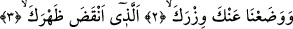

2-3. Belini büken yükünü senden alıp atmadık mı?
“Belini büken” ağırlığı âdetâ belini çatırdatırcasına ses çıkaran ağır “yükünü senden
alıp atmadık mı?” Yani senin sırtındaki ağır yükü kaldırıp attık ve indirdik. Bu âyette
“anke” kelimesi, indirdik anlamına gelen “vada’nâ” fiiline bağlıdır. Bu kelimenin sarih
mef’ûl’den önce getirilmesi bir başka ifâdeyle, “vizrake” kelimesinden daha önce ifâde
edilmesi Peygamber Efendimiz’in (s.a.) göğsüne ve kalbine sevinç verme noktasındaki
acelenin kasdedilmiş olmasından ve geriye bırakılan “vizrake/yükünü” kelimesine ise
teşvik amaçlanmasından dolayıdır.
“Enkaza zahrek” ifâdesini biraz daha yakından ele alalım. Bunun anlamı sırtındaki
yükü taşımak nakiz ile oluyordu demektir. Nakiz; dağılma, parçalanma sesine denir.
Tıpkı üzerinde ağır bir yük sebebiyle dağılıp, parçalanmaya yüz tutan semerin çıkarmış
olduğu ses gibi.
Müfredat’ta ifâde olunduğuna göre okuduğumuz âyetin anlamı şu şekildedir: Belini
kıran ve bundan dolayı çatırdama sesi meydana getiren yükünü senden alıp atmadık mı?
Kamus’un ifâdesine göre ise âyetin mânâsı; belini büken ve âdetâ zayıf hale getiren
yükünü senden alıp atmadık mı? Veya belini büküp ona gıcırtı sesi çıkaracak kadar ağır
gelen yükü alıp atmadık mı?
Bazı tefsirlerde ifâde edildiğine göre âyetin mânâsı; senin sırtında çok ağır bir yük
olarak mevcut olan ve sırtına ağır gelen yükünü senden alıp atmadık mı? şeklindedir.
Çünkü bir yükün sırtı ağırlığından dolayı çatırdatması ancak üzerinde yük olan semerin
çatırdı çıkarması anlamına gelir. Bu da yükün ağırlığından ve semerin bazı kısımlarının
yüke dayanamayarak dağılmaya yüz tutmasından dolayı ses çıkarmasından ibarettir. Bu
âyet-i kerime ile Peygamber Efendimiz’in (s.a.) bazı durumları örnekle anlatılmış
olmaktadır. Bunları şöylece sıralayabiliriz; Peygamber Efendimiz’e, peygamberlik
gelmeden önce işlemiş olduğu bazı hatalar ağır gelip kendisini kederlendiriyordu. Yine
bazı ahkamın ayrıntılarını ve şer’i hükümlerden bazılarını tam olarak bilmeyişi
kendisine ağır geliyordu. Öte yandan kavminden inatçı olan kimselerin müslüman
olmalarına dâir kendini parçalarcasına duymuş olduğu istek, kendini yiyip bitirmesi ve
mağfiret dileme esnasındaki konumu yine ona ağır gelen hususlardandı. Nitekim
mağfiret dileme ile ilgili olarak bir âyet-i kerimede şöyle buyuruluyor: “Biz sana
doğrusu apaçık bir fetih ihsan ettik. Böylece Allah, senin geçmiş ve gelecek
günahını bağışlar” (Fetih, 48/1-2) ayrıca şer’i hükümlerden bazılarının öğretilmesi ve
belli bir noktadan sonra özrü için hazırlık yapılması yine onun sırtına ağır gelen,
kendisini kederlendiren hususlardandı. Şu halde âyetin metninde yer alan “belini büken
yükünü senden alıp atmadık mı?” ifâdesi Peygamber Efendimiz’in (s.a.) günah